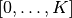

The Core and User scripts¶
The big picture¶
The WaveBlocks project is split into two parts. The first part (and this is called WaveBlocks too) is nothing else than a library or python package which collects code modules that are general enough to be useful in many different applications and simulation contexts. The second part consists of several scripts that use code from the WaveBlocks package via python’s import statement and perform simulations, do data evaluation, plotting and much more. Some of these scripts are fairly general (for example the one responsible for plotting energies) while others originated from a single very specific research question ...
In the Core¶
In this section we describe the important parts of the WaveBlocks package from a user point of view.
Time propagation algorithms¶
At the moment, three algorithms for time propagation of initial values are implemented.
| Name | Description |
|---|---|
| fourier | Fourier propagation / Operator splitting |
| hagedorn | Homogeneous Hagedorn wavepackets |
| multihagedorn | Inhomogeneous Hagedorn wavepackets |
Specifying initial values¶
Warning
The following sections describe the settings of the old WaveBlocks code and do not apply to WaveBlocksND.
Initial values are always specified as wavepackets. For the Fourier propagator, the packets are sampled at the grid nodes and for packet based algorithms, these initial packets are just propagated. The two configuration variables parameters and coefficients are responsible for specifying the initial wavepackets. Their values are interpreted as usual but let’s look at this important part a bit closer.
For the fourier Propagator¶
The initial values for the fourier propagator are given in the simulation configuration file by the variable initial_values. The data format is a list of arbitrary length. Each entry is a list itself having the format:
[ level, parameters, [(index,value), (index,value), ...] ]
where the level is the energy level, the parameters is a 5-tuple
of the usual form (q,p,Q,P,S) containing the wavepacket’s parameter. The
third part is a list containing one or several (index,value) pairs
which hold the value  of the coefficient with index
of the coefficient with index  . We know
that this is all the data necessary for constructing a wavepacket that lives on
the given energy level. (But remember that these packets are sampled at the grid
nodes later to be usable for the Fourier propagation.)
. We know
that this is all the data necessary for constructing a wavepacket that lives on
the given energy level. (But remember that these packets are sampled at the grid
nodes later to be usable for the Fourier propagation.)
This input format allows us to place several wavepackets on the same energy level, for example the following valid specification places two Gaussian packets which will run into each other and bounce off:
initial_values = [[ 0, (P, Q, S, -0.5, 2.0), [(0,1.0)]],
[ 0, (P, Q, S, 0.5, -2.0), [(0,1.0)]]]
For compatibility reasons the input can also be of the format described in the next two sections. This allows for sharing of simulation configurations.
For the hagedorn Propagator¶
For this propagator we need one set of parameters which belong to the leading component. With these parameters we then set up a homogeneous wavepacket. We can specify the parameters as follows:
parameters = (q, p, Q, P, S)
with some meaningful values for  ,
,  ,
,  and
and  and
and  . For compatibility with the inhomogeneous case, we can also
specify the parameters as:
. For compatibility with the inhomogeneous case, we can also
specify the parameters as:
parameters = [ (P0, Q0, S0, p0, q0), ..., (Pn, Qn, Sn, pn, qn) ]
where there are as many inner tuples as energy levels. The initialisation code then picks just the single tuple with its index matching the leading_component value. This allows easy sharing of configuration files with minimal editing.
The coefficients of the linear combination are specified for each
level separately. There is a list of (index,value) pairs for
each energy level and all these lists are collected in one big list
assigned to the variable coefficients. This could for example look like:
coefficients = [[ (0,1.0), (2,0.5), (4,0.2)],
[ (0,0.1), (3,1.2)]]
where we have two energy levels (note that the wave function here is not normalized!).
These (index,value) pairs give the value of the coefficient
with index . For example the list containing only the pair [ (2,1.0) ]
yields a  packet while the list [ (0,0.5), (1,0.5) ] gives
a superposition of
packet while the list [ (0,0.5), (1,0.5) ] gives
a superposition of  . If you
wish to have no wavepacket on an energy level just provide the dummy pair [ (0,0.0) ].
. If you
wish to have no wavepacket on an energy level just provide the dummy pair [ (0,0.0) ].
For the multihagedorn Propagator¶
This propagator needs a set of parameters for each energy level. Thus the data structure must look like:
parameters = [ (P0, Q0, S0, p0, q0), ..., (Pn, Qn, Sn, pn, qn) ]
where there are as many inner tuples as energy levels. The coefficients
are specified the same way as in the homogeneous case above.
Required parameter sets¶
The simulations can be configured with a very flexible scheme. One must only specify the values that are really necessary and can omit all others. There are some input parameters that have to be provided in any case and many others that are only necessary for a specific algorithm or are purely optional.
In this section all parameters that can be provided are listed. You are free to define additional parameters and use them in a data evaluation script. Just make sure there is no variable name clash.
Parameters for all propagation algorithms¶
- algorithm
The simulation algorithm.
- Possible values: fourier, hagedorn, multihagedorn
- Data type: string
- potential
The potential
- Possible values: see Section Ready made Potentials
- Data type: string or dict
- T
The time when the simulation stops
- Possible values: Non-negative float
- Data type: float
- dt
The size of a single time step
- Possible values: Non-negative float
- Data type: float
- eps
The semi-classical scaling parameter
- Possible values: Non-negative float
- Data type: float
- parameters
- The Hagedorn parameters
 of the
initial wavepackets. The exact format of this variable depends on the
simulation algorithm used, see above.
of the
initial wavepackets. The exact format of this variable depends on the
simulation algorithm used, see above. - coefficients
- A list with the lists of (index,value) tuples that set the coefficients of the basis functions for the initial wavepackets. The exact format of this variable depends on the simulation algorithm used, see above.
- write_nth
Save simulation data every n-th timestep
- Possible values: Positive Integer where the case 0 is interpreted as
never. In this case only the initial values are saved.
Data type: integer
Default value: is 0 if no other value is provided.
- save_at
A list of times and/or timesteps when saving of the simulation data takes place. (Which data are saved depends on the implementation of the respective SimulationLoop subclass.)
- Possible values: A list of integers and/or floats. Integers are interpreted
as timesteps and floats as (absolute) times. Always be aware of this difference in interpretation!
Data type: integer or float
- Default value: an empty list, thus saving at special points in time
is not enabled.
- matrix_exponential
Choose the algorithm used for computing the matrix exponential.
- Possible values: "pade", "arnoldi"
- Data type: string
- Default value: "arnoldi"
- arnoldi_steps
The number of arnoldi steps performed. Use this together with the parameter matrix_exponential set to "arnoldi".
- Possible values: positive integers
- Data type: integer
- Default value: 20
Parameters for the fourier propagator¶
- initial_values
- A specific input format for the initial values. This allows to place an arbitrary number of wavepackets on any energy level. A valid configuration must either have this variable set or both of parameters and coefficients. If all three are given, this takes precedence.
- ngn
The number of grid nodes used for the Fourier transformation.
- Possible values: Integer, optimal is a power of 2 but this is not necessary.
- Data type: integer
- f
A scalar number that determines the extension of the computational domain.
- Possible values: A non-negative float
- Data type: float
Note
You must specify a basis_size (see below) for the Fourier propagator too because we compute initial values from wavepackets.
Parameters for the hagedorn propagator¶
- basis_size
Number of basis functions used for homogeneous Hagedorn wavepackets.
- Possible values: Non-negative integer larger than 2.
- Data type: integer
- leading_component
The leading component is the eigenvalue that governs the propagation of the wavepackets’ parameters.
- Possible values: Integer in the range 0 to
 inclusive,
inclusive, where
 is the number of energy levels the
given potential supports.
is the number of energy levels the
given potential supports.
- Possible values: Integer in the range 0 to
Data type: integer
Parameters for the multihagedorn propagator¶
- basis_size
Number of basis functions used for inhomogeneous Hagedorn packets.
- Possible values: Non-negative integer larger than 2.
- Data type: integer
Optional parameters¶
All variables that appear as parameters of some potential can be specified here. For example, the quadratic potential has a parameter sigma which can be given in the simulation configuration. (Otherwise a default value would be used.) For potentials that contain parameters for which no default values are specified, these parameters must be given in the configuration file. An example of such a parameter is the delta of the delta_gap potential.
Parameters related to spawning¶
Warning
The spawning algorithms are not supported in the new WaveBlocksND code yet.
There are a number of parameters which are all related to the different spawning techniques. The name of these parameters always starts with the prefix spawn. It is beyond the scope of this document to explain the details of the spawning techniques and also the theoretical origin of the various parameters.
To enable spawning, the configuration parameter algorithm can be set to additional values not mentioned above.
- algorithm
The simulation algorithm
- Possible values: "spawning_adiabatic", "spawning_nonadiabatic"
- Data type: string
Since these algorithms make use of the homogeneous Hagedorn propagation internally, all variables related to this propagator must be set additionally.
Then there is a bunch of parameters controlling the details of the spawning process. Most of these variables must be set properly, some are optional depending on specific choices for others.
- spawn_method
Specify the spawning method used. If set to lumping we just spawn a normed wavepacket by copying over the norm of the spawn candidate. If set to projection a full basis projection is done up to the maximal order given by the parameter spawn_max_order. (Always set this value too.)
- Possible values: "lumping" or "projection"
- Data type: string
- spawn_max_order
The maximal order (size) of the spawned wavepacket i.e. on how many new basis functions the basis projection is performed. This only makes sense in combination with the spawn_method parameter set to projection.
- Possible values: Non-negative integer in the range 
where
 is the basis size given by basis_size.
is the basis size given by basis_size.
Data type: integer
Note
This spawn_max_order is not the basis size of the spawned wavepacket. (Which we currently can not control.)
- spawn_order
The spawned wavepacket is assumed to be of the form of
 at leading
order. This is not always true but we need the value of
at leading
order. This is not always true but we need the value of  in the algorithms
for formal reasons. If the value of is wrong then the results may be
much worse. (Consider this to be a limitation of the current algorithms.)
in the algorithms
for formal reasons. If the value of is wrong then the results may be
much worse. (Consider this to be a limitation of the current algorithms.)- Possible values: Non-negative integer in the range
where
is the basis size given by basis_size.
Data type: integer
Finally, we have several possibilities how we decide if and when to spawn. This criterion or oracle has to be set by the following variable. There is an open set of possibilities, more criteria may be added in the future. All values are class names of the classes that implement the corresponding condition. The implementations can be found in the file SpawnConditions.py.
- spawn_condition
Specify the spawning condition used to decide if and when spawning should occur.
- Possible values: "spawn_at_time", "norm_threshold", "high_k_norm_threshold",
"high_k_norm_derivative_threshold", "norm_derivative_threshold_l2", "norm_derivative_threshold_max"
Data type: string
Note
If in doubt, try using norm_threshold or norm_derivative_threshold_l2 with sensible values for the related parameters. (Choosing good values for these parameters is the most difficult part.)
Each of these methods depend on one or several more parameters configuring their behaviour in detail. These parameters are described in the following list.
- spawn_threshold
The spawning threshold is compared to the norm of the fragment or spawning candidate examined. Its norm has to exceed this value in order to initiate the spawning process.
Possible values: Non-negative float (should be between 0.0 and 1.0)
Data type: float
- Used by: All methods. (Because it is used in the parameter estimation process
to avoid division by zero.) The methods norm_threshold and high_k_norm_threshold decide solely on this value. The methods *_derivative_* use this value as a first hint in combination with others.
- spawn_K0
The index of the coefficient
 where splitting in low and high
coefficients is applied. ( is included into the set of high ones.)
where splitting in low and high
coefficients is applied. ( is included into the set of high ones.)- Possible values: Non-negative integer in the range
where
is the basis size given by  .
.
Data type: integer
- Used by: The conditions high_k_norm_threshold and high_k_norm_derivative_threshold.
This parameter is also used by all method that do a low/high filtering.
- spawn_hist_len
The length of the history measured in number of samples.
- Possible values: Positive integers. Values in the range of 5 up to
about 30 are probably good choices.
Data type: integer
- Used by: All methods that keep a history and remember their past.
In particular these are: high_k_norm_derivative_threshold, norm_derivative_threshold_l2, norm_derivative_threshold_max.
- spawn_deriv_threshold
The threshold applied to the derivative of the norm of the fragment examined for spawning. The derivative is usually approximated by simple finite differences.
Possible values: (Small) real positive values
Data type: float
- Used by: The methods
high_k_norm_derivative_threshold, norm_derivative_threshold_l2, norm_derivative_threshold_max
- spawn_time
The time when we want to spawn.
- Possible values: Real values in the range
![[0, T]](../_images/math/1d3cb81063fd04cd699285c31684aa3e5b20ada6.png) . The values will
. The values will be rounded to the nearest timestep interval.
- Possible values: Real values in the range
Data type: float
Used by: The method spawn_at_time.
Data storage¶
What data are written to disk. How can we retrieve data, IOM basics, usage, etc
How IOM works¶
The so-called IOManager is responsible for storing all our data. It provides a meaningful API for storing and retrieving simulation data and the goal is to make data handling from scripts as easy as possible. The IOManager uses the low-level hdf5 file format to actually store the numerical data efficiently. Dealing directly with the hdf5 API provided by h5py would be cumbersome as we would have to remember much more details about how the data are stored inside an hdf file. With this thin layer we just tell the IOM which data we want to store or load and it performs all the low-level stuff behind our back.
Please note that the tab-completion of ipython won’t work as usual on IOManager instances because of its plugin architecture. The plugins allow to add functionality at runtime and only when its really used. Thus a (member)function may be loaded right at the moment it gets called the first time. This is the reason why tab-completion and introspection will not work for (member)functions that had never been called before.
What gets stored¶
Each file containing simulation results is basically divided into datablocks. There is one special block called the global datablock which stores data that are identical for the whole simulation (for example space domain grids, simulation parameters etc). Then there can be an arbitrary number of normal data blocks which can store various data related to wavepackets, wavefunctions and observables. Each of these data sets is optional and there are functions to query if specified data is available. The next figure shows the coarse structure of any simulation results file.

Coarse structure of a file containing simulation results.
The figure below shows the internal structure of a single data block. In this structure not all data objects always exist depending on what computations were performed. The dark blocks are at the level of individual data tensors while the lighter grey boxes represent hdf groups. Note that not all data sets may exist at all and that each group can have different subsets. For example if you never computed observables, then this entire block is missing. The wavefunction data can come from a simulation with the Fourier propagator or from the evaluation of wavepackets on a given domain-wide grid.

Possible structure of a single data block. Not all data always exist.
Saving data at times and timesteps¶
Storing simulation data can happen in various different ways. For example you can store data at regular time intervals. Or at a list of fixed points in time. Both is easily possible with the tools provided by the IOManager together with the TimeManager. While the IOManager is responsible for saving and loading the data, the TimeManager is used for all computations related with time, timesteps and so on, for example to convert a list of times into a list of timesteps or checking if a given time is is within the simulated time range etc.
The two parameters write_nth and save_at are used to configure the way you wish to save data. While the first is used to specify the details of saving at regular time intervals, the second one provides the means to specify a list of points in time when saving should take place. A few examples of saving at regular intervals:
# Save data at each timestep
write_nth = 1
# Save data each 5th timestep
write_nth = 5
# Never save data
write_nth = 0
Please note that this scheme is rigid in the sense that if for example the timestep corresponding to the end of the simulation is not an integer multiple of the value of this parameter then the data from the end is missing. (This should be quite obvious!)
The parameter save_at has to be a python list containing integers and/or floats. There is a big difference between the two data types you always have to be aware of! Integer values are interpreted as timesteps while floats will be taken as times. A few examples on saving at specified times only:
# Save at timestep 3, 6, 7, 13 and 19
save_at = [3, 6, 7, 13, 19]
# Save at the end time only
# Assuming T = 5.34 and T is an integer multiple of dt!
save_at = [5.34]
# Save at a few times
# This is usefull to compare simulation results of simulations
# with different timestep sizes. Of course the times have to be
# integer multiples of *all* timestep sizes in consideration!
save_at = [3.2, 4.5, 8.7, 19.3]
You can freely mix the two approaches and specify crazy things like the following:
write_nth = 15
save_at = [1, 2, 3, 4.5, 10, 3.2, 40, 23.45, 23.55]
which translates to the: Save the data each 15 steps and additionally
save the data at the timesteps 1, 2, 3, 10 and 40 and save the data at the time 3.2,
23.45 and 23.55. It is assumed that time is an integer multiple of the
timestep size. (Otherwise more or less careful rounding will be applied.)
The list doesn’t have to be in monotone order and duplicates will be removed as well
as values outside the interval where  is the time at which
the simulation stops. A good use case for a mixed specification is for example saving at big
intervals but including the very end of the simulation:
is the time at which
the simulation stops. A good use case for a mixed specification is for example saving at big
intervals but including the very end of the simulation:
write_nth = 35
save_at = [5.34] # Same assumption as above
Note that even if you disable saving data entirely be setting:
write_nth = 0 # Default is 1
save_at = [] # Default is []
you will end up with a hdf5 file still containing the initial values as they are at time equal 0 (before the first timestep was made).
Retrieving the simulation parameters¶
From a hdf5 file with the simulation data we can get back the parameters this simulation used. Retrieval is trivial, the following commented interactive python session shows the basics which can of course be used in a user script too:
>>> from WaveBlocks import IOManager
>>> iom = IOManager() # create an IOM instance
>>> iom.load_file("simulation_results.hdf5") # load the data file
>>> sim_params = iom.get_parameters() # request the parameters
>>> print(sim_params)
====================================
Parameters of the current simulation
------------------------------------
[...]
With only three trivial lines of code we get back all the parameters that were used for the simulation!
Load simulation data¶
Simulation data can be loaded from a given simulation_results.hdf5 file by an IOManager instance. You can even do this inside an interactive ipython session. The API is quite trivial, all functions for loading data have their name prefixed by load_ as for example in load_energy(...). Every function for loading and saving data has a keyword argument block defaulting to 0 which tells the IOManager from which data block to take the requested data. For quantities that represent time series, the load functions also provide a keyword argument timestep that can be used to load data from a single timestep. The default is None meaning load the data from all timesteps. A sample of such an interactive session could look like this:
>>> from WaveBlocks import IOManager
>>> iom = IOManager() # Create a new IOManager instance
>>> iom.open_file("simulation_results.hdf5") # And open a given hdf5 file
>>> print(iom)
IOManager instance with open file simulation_results.hdf5
>>> ekin, epot = iom.load_energy() # Load the energies from a simulation
Requested function: load_energy # Don't bother about the messages
Plugin to load: IOM_plugin_energy # concerning the plugins.
>>> ekin.shape # We see the the energies are given
(301, 1) # as time series over 301 timesteps
>>> epot.shape
(301, 1)
>>> tg = iom.load_energy_timegrid() # Load the corresponding timegrid which
# contains the timesteps when the data
>>> tg.shape # was saved. This is important if the
(301,) # data was saved at non-regular intervalls.
>>> iom.finalize() # Close the hdf5 file
>>> plot(tg, ekin) # Plot the kinetic energy over time
Of course all this works exactly the same inside any regular python script. For a complete list of all the load_ functions please see the API documentation or the docstrings.
Working with simulation data¶
The following code snippet shows how to perform a data transformation task for all blocks of a simulation results file.:
>>> iom = IOManager()
>>> iom.open_file("testdata.hdf5")
>>> for blockid in iom.get_block_ids(): # Iterate over all data blocks
if iom.has_energy(block=blockid): # If the current data block containes
... # energies we may do something
User scripts¶
Consider merging this section with chapter 2. Do an explicit example walk through somewhere.
Preparing simulations¶
Preparing a whole bunch of simulations is easy. Given the metaconfiguration file we call the script ConfigurationGenerator.py like:
python ConfigurationGenerator.py <metaconfiguration.py> <configurations_dir>
where the configurations_dir is optional. If not given a directory called autogen_configurations will be created. Remember to move the configuration to the configurations directory if you plan to use the Batch.py script.
Generating Configurations¶
In detail description on how to generate valid configurations
Manually¶
Meta-configurations¶
The best approach to write a metaconfiguration file is to copy an existing one from the examples directory.
The rules for valid files are as follows:
- You can use any valid python statement as value
- All statements are written to a pure python code file
- You can write numbers, lists etc as plain text strings
- All that is not in string form gets evaluated right now
- Remember to escape python strings twice
- You can use variable references but with great care!
- The ordering of the statements in the output file is such that all statements can be executed w.r.t. local variables. This is some kind of topological sorting. Be warned, it’s implemented using black magic and may fail now and then!
That should be all ...
Running simulations¶
To run a single simulation, use the Main.py script. The first command-line argument is the simulation configuration file (with an arbitrary file path):
python Main.py path/to/the/simulationparameters.py
The results will be written to the file simulation_results.hdf5 in the local directory where the script was called and not where the configuration file was loaded from. The script refuses to run if there is already a file simulation_results.hdf5 in the local directory. This is to prevent you from data loss.
To run a bunch of simulations, use the script called Batch.py. It has three command line parameters and all are optional with sensible defaults. The first specifies the batch configuration that will be used. The second is a directory path pointing to the directory where the configuration files are located. All python files within that directory (excluding recursive descent) will be treated as simulation configurations. The directory path defaults to ./configurations/. Last but not least the third argument specifies the directory path where the simulation results (numerical data, plots etc) will be placed after the simulation finishes. This defaults to ./results/ with one subdirectory for each simulation configuration. A call looks like:
python Batch.py batchconfiguration.py configurations_dir results_dir
This is all you need to know to be able to run simulations.
Computing additional data¶
Only compute/store what comes out directly from the time propagation (Or what would be much more difficult to computer afterwards)
Compute all other data in a separate step after the simulation finished Example: Norms, energies etc
Evaluating data¶
Further computations
Plot data¶
Call plot scripts which load the simulation data from a file and plot some values.